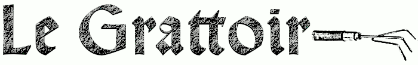

Chargement... ⏳

Toute l'information de seconde main par des procédés à l'éthique parfois discutable
Wikipedia
Google queries
Bien Public
Semur en Auxois
Hydrométrie
Aval barrage Pont : hauteur d'eau (mm)
Le Monde
Courrier international
IGN France
CNET France